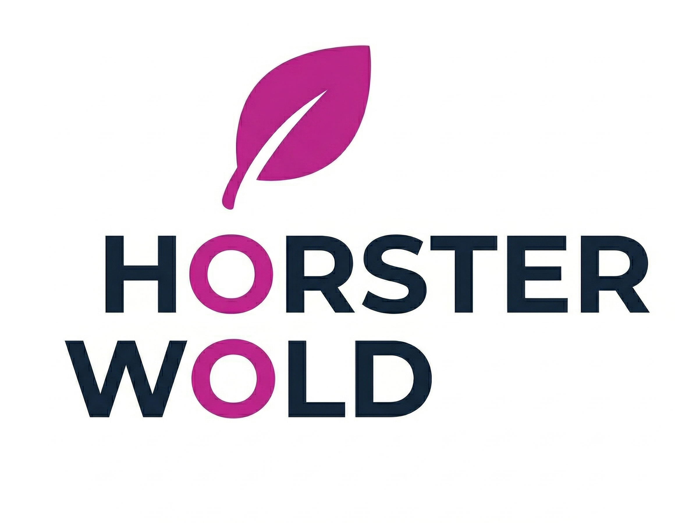

Controleer ...
Klopt deze meterstand?

Je ontvangt een mail met een uitnodiging om de meterstanden door te geven.
Welkom terug, ...
De locatie van de meter is meestal in de meterkast in uw recreatiewoning, vaak direct bij de voordeur of achter een specifieke wand in de gang.
De foto's worden veilig doorgestuurd naar ons systeem. Ze worden tijdelijk opgeslagen om de automatische aflezing te verifiëren en daarna alleen gebruikt voor controle bij onwaarschijnlijke afwijkingen.
Geen probleem, neem contact op met de beheerder om de meterstanden door te geven.
Klopt deze meterstand?
Je meterstand is succesvol ontvangen.
Je hebt nog meterstanden open staan.